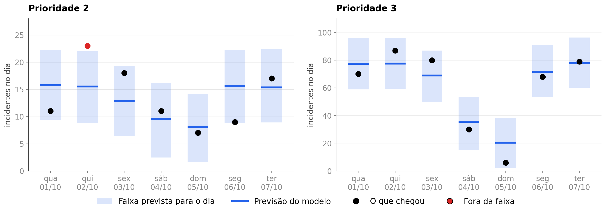

<style>
/* ═══ slide 17 · variação B · a figura ocupa a largura ════════════════════════
   Pedido do dono do projeto: esticar o gráfico e aliviar o texto de baixo, que
   na variação A pesava e disputava a atenção com a figura.

   Aqui a figura é a largura inteira do corpo, numa proporção própria gerada
   pelo `_figuras_previsao.py` (08_previsao_7dias_largo.png, 16,4 por 4,4
   polegadas em dpi 200). O número que se fala sai de baixo e vira uma ficha no
   alto, à direita do título, onde o olho já está. Debaixo da figura fica uma
   linha só.

   O detalhe da cobertura na janela inteira, que a variação A trazia no pé, sai
   daqui: ele está na divisória do slide 13 e no banco de perguntas. Um slide,
   um assunto.

   Números de data/interim/03_previsao_diaria.parquet, previsão feita em
   1º de outubro de 2025 para os sete dias seguintes, nas duas prioridades:
   13 dos 14 pontos dentro da faixa, e o único fora é o P2 de 02/10, com 23
   contra um teto de 22.
   ══════════════════════════════════════════════════════════════════════════ */
.pvb .body{padding-top:14px}
.pvb .topo{display:flex;align-items:flex-end;justify-content:space-between;gap:40px}
.pvb .tt{font-size:52px;letter-spacing:-1.9px}

/* a ficha do número, ao lado do título */
/* a ficha era larga e o número saía pequeno dentro dela: agora o número manda
   e o rótulo fica em duas linhas curtas ao lado */
.pvb .ficha{flex-shrink:0;display:flex;align-items:center;gap:16px;padding:18px 26px;
  border-radius:18px;background:var(--ink);color:#fff;
  box-shadow:0 26px 54px -30px rgba(10,14,23,.6)}
.pvb .ficha b{font-size:64px;font-weight:900;letter-spacing:-3px;line-height:.86;
  font-variant-numeric:tabular-nums}
/* filho direto: sem o >, a regra pegava o span do contador dentro do <b>
   e o número de 64px saía com 15 */
.pvb .ficha > span{font-size:15px;line-height:1.35;color:#B7C0CB;width:11ch}
.pvb .ficha > span em{font-style:normal;color:#fff;font-weight:700}

.pvb .cena{flex:1;display:flex;align-items:center;margin-top:18px;min-height:0}
.pvb .quadro{width:100%;padding:18px 22px}
.pvb .fig{display:block;width:100%}

.pvb .fecho{display:flex;align-items:flex-start;gap:12px;margin-top:auto;padding-top:18px;
  border-top:1px solid #DCE4EF;font-size:16.5px;line-height:1.45;color:var(--tx)}
.pvb .fecho .ic{width:20px;height:20px;color:var(--accent);margin-top:2px;flex-shrink:0}
.pvb .fecho b{color:var(--head);font-weight:700}
</style>

<section class="slide light pvb" data-slide="17" data-var="a" data-quem="ana">
  <div class="mesh"></div><div class="grid-bg"></div>
  <div class="hd">
    <div class="bi"><svg viewBox="0 0 28 28" fill="none"><path d="M6 22L12 14L16 17L22 8" stroke="#fff" stroke-width="2.2" stroke-linecap="round" stroke-linejoin="round"/><circle cx="22" cy="8" r="3" stroke="#3B82F6" stroke-width="1.5"/><circle cx="22" cy="8" r="1.2" fill="#3B82F6"/></svg></div>
    <div class="bn">Cronos</div><span class="bt">BANCA FINAL &middot; 15/09/2026</span>
    <div class="tag">Avaliação &middot; a previsão de 1º/10 contra a semana real</div>
  </div>
  <div class="body">
    <div class="topo">
      <div>
        <span class="eb"><span class="rv" style="--d:240ms">Prophet &middot; quantos incidentes chegam</span></span>
        <h1 class="tt"><span class="mask" style="--d:340ms"><span>Os próximos sete dias</span></span></h1>
      </div>
      <div class="ficha rv" style="--d:1500ms">
        <b><span class="ct" data-to="13" data-delay="1640">0</span></b>
        <span>dos <em>14 dias</em><br>dentro da faixa</span>
      </div>
    </div>

    <div class="cena">
      <div class="quadro cartao rv3" style="--d:640ms">
        
      </div>
    </div>

    <div class="fecho rv" style="--d:1800ms">
      <svg class="ic" viewBox="0 0 24 24"><circle cx="12" cy="12" r="9.4"/><path d="M12 7.6v4.8"/><path d="M12 16.2h.01"/></svg>
      <span>Cada caixa é a faixa que o modelo deu para aquele dia, feita em 1º de outubro. <b>O único ponto fora ficou 1 incidente acima do teto.</b></span>
    </div>
  </div>
  <div class="ft"></div>
</section>
